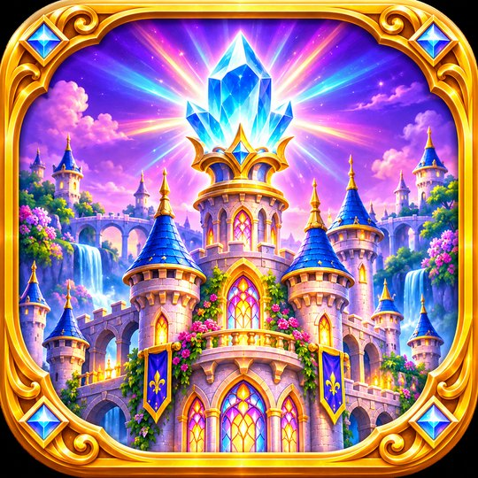

Le Château des Lumières
Okufanele ukulindele
- Amazinga angu-150 emhlabeni engu-6 opendiwe
- Izibuko, ama-prism, ingilazi enemibala namagiya
- Akudingeki i-akhawunti, kudlalwa ngaphandle kwe-inthanethi

Kuyeza maduzane ku-iPhone nku-Android
Phendula izibuko, khanyisa inqaba.
Kuyeza maduzane ku-AndroidInqaba icimile. Phendula izibuko namahholo ukuze uqondise imisebe kumakristalu: uma onke ekhanya, umnyango wegolide uyavuleka.
Amazinga angu-150 emhlabeni engu-6: imibala yokuxuba, ingilazi enemibala, ama-prism, izithombe ezibaziwe namagiya. Amacebo nezinkanyezi ezi-3 ezingeni ngalinye kwabahlakaniphe kakhulu.
I-Le Château des Lumières iyeza maduzane ku-App Store ye-iPhone nase-Android. Inkinobho yokulanda izovela phezulu kwale ndawo ngokushesha nje lapho ikhishwa.
Le Château des Lumières
Sithumelele i-imeyili: contegamesstudio@gmail.com